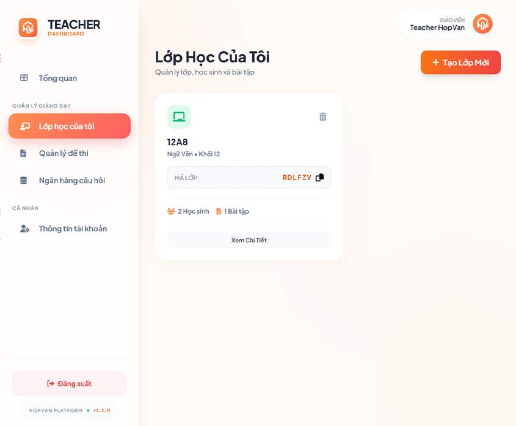

Làm Chủ Kiến Thức
Cùng HopVan AI
Chào mừng bạn đến với HopVan! Dưới đây là hướng dẫn chi tiết các tính năng dành cho cả Giáo viên và Học sinh để tối ưu hóa trải nghiệm dạy và học Văn.
Khu vực Giáo viên
Tạo & Quản lý Lớp học
Tính năng Classroom cho phép giáo viên tạo không gian học tập riêng, giao bài tập và theo dõi tiến độ của học sinh.
Cách tạo lớp mới
- Đăng nhập tài khoản Giáo viên.
- Vào menu "Lớp học của tôi" > Bấm nút "Tạo lớp mới".
- Điền thông tin: Tên lớp (VD: 12A8), Môn học, Mô tả.
- Sau khi tạo, hệ thống sẽ cấp Mã Lớp (Class Code).
- Quan trọng: Sao chép Mã lớp này và gửi cho học sinh để các em tham gia.

Quản lý Bài nộp & Chấm điểm
Giáo viên có thể xem danh sách bài nộp, chấm điểm thủ công hoặc sử dụng AI hỗ trợ gợi ý chấm.
- Truy cập vào Lớp học cụ thể > Tab "Bài tập".
- Chọn bài tập muốn chấm > Xem danh sách học sinh đã nộp.
- Bấm vào tên học sinh để xem chi tiết bài làm.
- Sử dụng công cụ "Gợi ý chấm AI" để tham khảo nhận xét (nếu cần).
- Nhập điểm số và lời phê, sau đó bấm "Trả bài" để công bố điểm cho học sinh.
Khu vực Học sinh
Tham gia Lớp học trực tuyến
Kết nối với lớp học của thầy cô để nhận bài tập và nộp bài trực tuyến.
Các bước tham gia
- Lấy Mã Lớp (Class Code) từ giáo viên của bạn.
- Vào menu "Lớp học của tôi" > Chọn "Tham gia lớp mới".
- Nhập mã lớp (6 ký tự) và xác nhận.
- Sau khi tham gia thành công, bạn sẽ thấy danh sách bài tập cần làm.
Bản tin Văn học
Kho tàng kiến thức cập nhật hàng ngày. Nơi bạn tìm thấy dẫn chứng NLXH, lý luận văn học và các bài văn mẫu chọn lọc.
Tìm kiếm nhanh
Lọc chủ đề
Lưu bài viết
Chia sẻ
Nhật ký & Gamification
Biến việc học thành thói quen thú vị. Hệ thống sẽ theo dõi tiến độ học tập của bạn.
- Streak (Chuỗi ngày): Đăng nhập và học mỗi ngày để duy trì ngọn lửa nhiệt huyết.
- Keys (Chìa khóa): Hoàn thành bài học để nhận Keys. Dùng Keys để mở khóa các tính năng nâng cao hoặc đổi quà.
- Level up: Tích lũy kinh nghiệm để thăng hạng tài khoản.
Phòng luyện đề AI
Công cụ mạnh mẽ nhất giúp bạn tự luyện viết văn.
Cách hoạt động:
Chọn đề bài có sẵn hoặc tạo đề ngẫu nhiên > Làm bài trực tiếp trên hệ thống > Nộp bài > Nhận kết quả chấm điểm và nhận xét chi tiết từ AI chỉ sau vài giây.Cộng đồng học tập
Tham gia Discord để trao đổi bài vở, hỏi đáp thắc mắc và giao lưu với hàng ngàn bạn học sinh khác.
Tham gia Discord